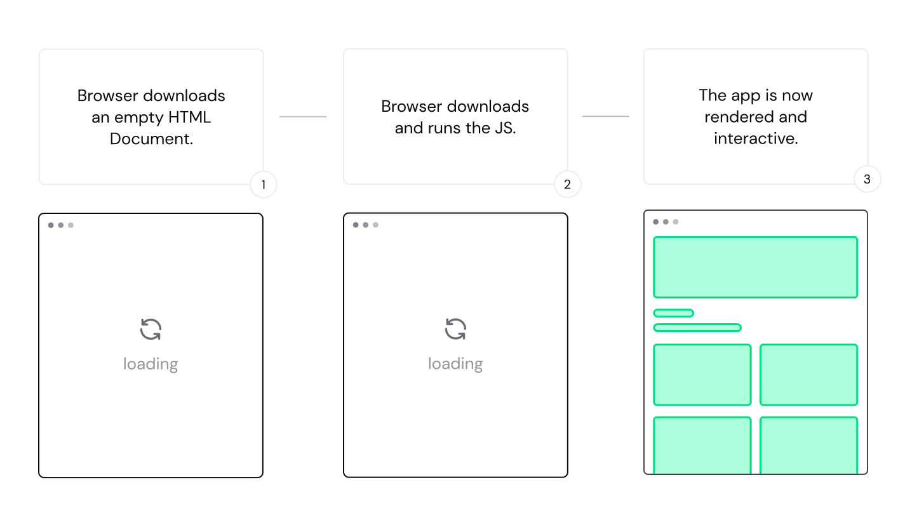

Nuxt is a progressive framework based on Vue.js to create modern web
applications
Why Nuxt?
JavaScript framework - Vue.js
Bundler - webpack 5 or Vite
Transpiler - esbuild
Server - h3
Routing library - vue-router
Nuxt directory
Nuxt uses the .nuxt/ directory in development to generate your Vue
application
How does it work?
Core Engine: nuxt
Bundlers: @nuxt/vite-builder and
@nuxt/webpack-builder
Command line interface: nuxi
Server engine: nitro
Development kit: @nuxt/kit
Nuxt 2 Bridge: @nuxt/bridge
Are you Nuxt?
Nuxt is the backbone of your Vue.js project, giving structure to build your
project
with confidence while keeping flexibility
Vue.js Development
Nuxt uses Vue as a frontend framework and adds features such as component
auto-imports and file-based routing
Components auto-imports
Every Vue component created in the components/ directory of a Nuxt
project will
be available in your project without having to import it. If a component is not used anywhere, your production’s
code will not include it
Vue Router
Most applications need multiple pages and a way to navigate between them. This is called
routing. Nuxt uses a pages/ directory and naming conventions to directly create routes
mapped to
your files
using the official Vue Router library
Developers chose to build Nuxt on top of Vue for these reasons:
The reactivity model of Vue, where a change in data automatically triggers a
change in the
interface
The component-based templating, while keeping HTML as the common language of the
web,
enables intuitive patterns to keep your interface consistent, yet powerful
From small projects to large web applications, Vue keeps performing well at scale
to ensure
that your application keeps delivering value to your users
Rendering Modes:
client-side
universal
Client-side only rendering

Universal Rendering
Coming in Nuxt 3
Hybrid Rendering
Rendering on CDN edge workers
TypeScript
Nuxt 3 is fully typed and provides helpful shortcuts to ensure you have access to
accurate
type information when you are coding